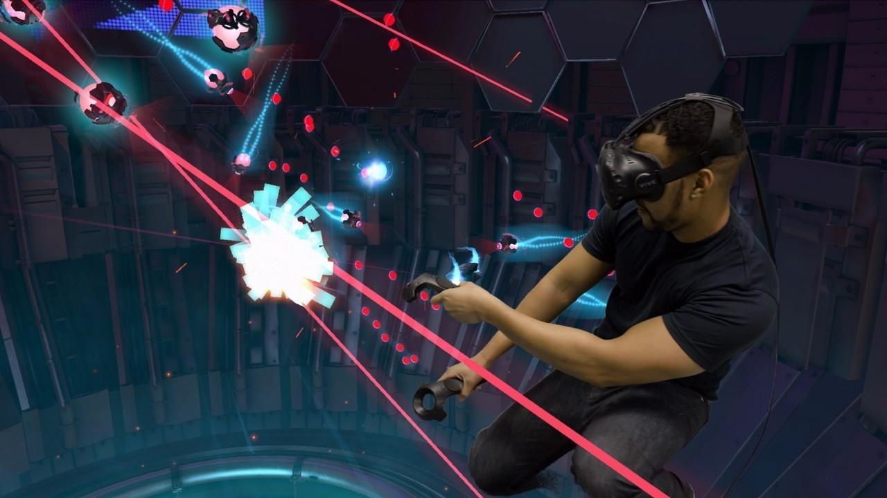
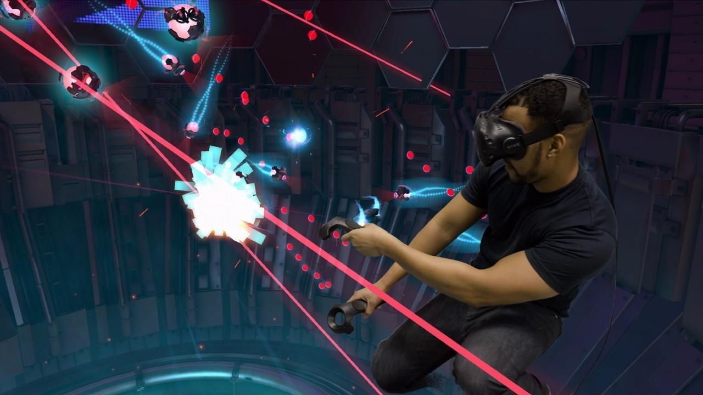

VR简介
1、VR是把原本在现实世界的一定时间、空间范围内很难体验到的场景，通过科学技术， 模拟仿真形成三维虚拟环境，使用户沉浸在该环境中，产生身临其境的感觉。
2、VR的优势是，在环境营造方面可以尽情地勾勒虚拟空间，可以创造一些现实中不具备的环境或者比较难遇到的环境；它的缺点是因为需要完全封闭环境，所以不能兼顾现实，容易出现安全问题。AR的优势在于不用完全沉浸在虚拟环境中，可以同时兼顾虚拟和现实；缺点在于环境是基于现实存在的，所以相对来说会降低人们的感官体验。
 所谓虚拟现实，顾名思义，就是虚拟和现实相互结合。从理论上来讲，虚拟现实技术（VR）是一种可以创建和体验虚拟世界的计算机仿真系统，它利用计算机生成一种模拟环境，使用户沉浸到该环境中。虚拟现实技术就是利用现实生活中的数据，通过计算机技术产生的电子信号，将其与各种输出设备结合使其转化为能够让人们感受到的现象，这些现象可以是现实中真真切切的物体，也可以是我们肉眼所看不到的物质，通过三维模型表现出来。因为这些现象不是我们直接所能看到的，而是通过计算机技术模拟出来的现实中的世界，故称为虚拟现实。
虚拟现实技术受到了越来越多人的认可，用户可以在虚拟现实世界体验到最真实的感受，其模拟环境的真实性与现实世界难辨真假，让人有种身临其境的感觉；同时，虚拟现实具有一切人类所拥有的感知功能，比如听觉、视觉、触觉、味觉、嗅觉等感知系统；最后，它具有超强的仿真系统，真正实现了人机交互，使人在操作过程中，可以随意操作并且得到环境最真实的反馈。正是虚拟现实技术的存在性、多感知性、交互性等特征使它受到了许多人的喜爱。
2、VR的优势是，在环境营造方面可以尽情地勾勒虚拟空间，可以创造一些现实中不具备的环境或者比较难遇到的环境；它的缺点是因为需要完全封闭环境，所以不能兼顾现实，容易出现安全问题。AR的优势在于不用完全沉浸在虚拟环境中，可以同时兼顾虚拟和现实；缺点在于环境是基于现实存在的，所以相对来说会降低人们的感官体验。
 所谓虚拟现实，顾名思义，就是虚拟和现实相互结合。从理论上来讲，虚拟现实技术（VR）是一种可以创建和体验虚拟世界的计算机仿真系统，它利用计算机生成一种模拟环境，使用户沉浸到该环境中。虚拟现实技术就是利用现实生活中的数据，通过计算机技术产生的电子信号，将其与各种输出设备结合使其转化为能够让人们感受到的现象，这些现象可以是现实中真真切切的物体，也可以是我们肉眼所看不到的物质，通过三维模型表现出来。因为这些现象不是我们直接所能看到的，而是通过计算机技术模拟出来的现实中的世界，故称为虚拟现实。
虚拟现实技术受到了越来越多人的认可，用户可以在虚拟现实世界体验到最真实的感受，其模拟环境的真实性与现实世界难辨真假，让人有种身临其境的感觉；同时，虚拟现实具有一切人类所拥有的感知功能，比如听觉、视觉、触觉、味觉、嗅觉等感知系统；最后，它具有超强的仿真系统，真正实现了人机交互，使人在操作过程中，可以随意操作并且得到环境最真实的反馈。正是虚拟现实技术的存在性、多感知性、交互性等特征使它受到了许多人的喜爱。